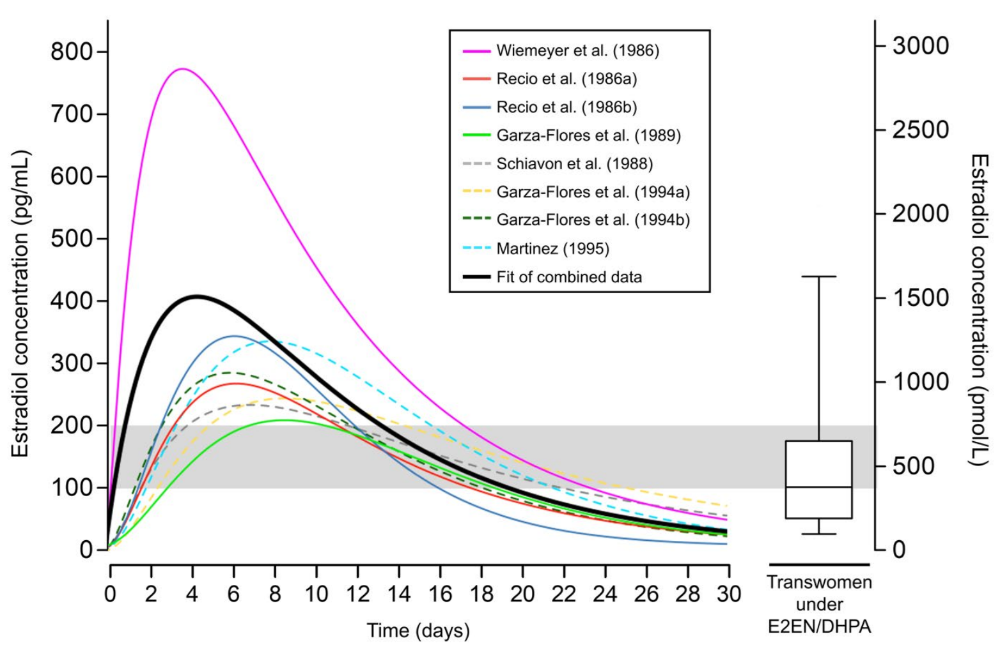

Literature Recognition
Transfeminine Science has been cited, mentioned, and/or recognized in the published scientific literature by various academics. This page is a partial list of these instances, with citations and excerpts. We express gratitude to these authors for their comments and that they found our work valuable.
Hughes et al. (2022)
Hughes, J. H., Woo, K. H., Keizer, R. J., & Goswami, S. (2022). Clinical Decision Support for Precision Dosing: Opportunities for Enhanced Equity and Inclusion in Health Care. Clinical Pharmacology & Therapeutics, 113(3), 565–574. [DOI:10.1002/cpt.2799]:
Lastly, we recommend that developers of [clinical decision support software (CDSS)] for dosing take an iterative and participatory approach to designing systems. By involving stakeholders in the design process, they will develop solutions that best suit users’ needs and are more likely to be adopted and used correctly. This participatory approach should involve interviews and usability testing with clinicians. Formal usability testing and analysis with real end users can improve the quality and usefulness of a system.88 Though patients themselves are not typically the end users of CDSS, their expertise (especially that of marginalized groups and organized patient advocacy organizations) can also inform CDSS developers. As an example, transgender people have compiled their own resources to understanding dosing regimens in the absence of clear clinical guidelines.89 Developers of CDSS could provide a great deal of value to these patient populations, and improve their software’s utility, by working with them to understand their needs from a dosing tool.
89. Aly, W. An interactive web simulator for estradiol levels with injectable estradiol esters. Transfeminine Science <https://transfemscience.org/articles/injectable-e2-simulator-release/> (2021) Accessed November 1, 2022.
Linet (2023)
Linet, T. (2023). Prise en charge endocrinologique d’une personne trans. [Endocrinological care of a trans person.] In Faucher, P., Hassoun, D., & Linet, T. (Eds.). Santé sexuelle et reproductive des personnes LGBT [Sexual and Reproductive Health of LGBT People] (pp. 109–124). Issy-les-Moulineaux, France: Elsevier Masson. [Google Books] [URL] [WorldCat] [Excerpt] [Translated]:
It may happen in consultation that the person does not wish to use the prescribed estrogens and wishes to continue the self-prescription of injectable estrogens. It is then possible to evaluate with them the most suitable dosage using the Transfem Science Injection Simulator (https://transfemscience.org/misc/injectable-e2-simulator/).
Barksdale (2024)
Barksdale, A. (2024). Care and Freedom From Below: Experiments in Trans Autonomy Through DIY. (Doctoral dissertation, The University of Arizona.) Tucson: The University of Arizona. [Google Scholar] [URL 1] [URL 2] [PDF]:
Transfeminine Science
Transfeminine Science (TS) is an online resource written by a collective of trans women and non-binary transfeminine people who review and interpret studies on hormonal medicines. TS is not explicitly geared towards people doing DIY, but the DIY hormone therapy community is acknowledged as part of their audience. They state, “Wherever possible, decisions about medical care should be made in partnership with a health care professional. We recognize that many transfeminine people are on do-it-yourself (DIY) hormone therapy however, and we aim to help inform this critical and underserved community of individuals as well” (Transfeminine Science 2023). The primary author of the articles on TS, Aly, has been involved with the DIY hormone therapy community, serving as a moderator for one DIY forum.12 Another author, Mitzi, “is an outspoken critic of her country’s [the United Kingdom] transgender healthcare system, and has self-medicated for the duration of her own transition” (Transfeminine Science 2023). The information and tools produced by TS are well regarded and circulated within the DIY hormone therapy community. Some articles have even been translated by community members into Chinese and Vietnamese.13
12. TS contributors are listed by a singular given name e.g. Aly or Lain. These names are possibly pen names solely for the purpose of TS. No personal profiles are linked on the site.
13. Project Trans has translated some articles into Simplified Chinese. The Vietnamese translations have been produced by Trans Girl VN.
I highlight the work of TS for two primary reasons. Firstly, they demonstrate how knowledge production is put to the use of making hormone use safer and more effective at meeting the needs of trans(feminine) people. Secondly, the level of knowledge available through TS exceeds the health literacy available through institutions. TS is often at the forefront of hormone therapy, able to educate on risks and potentials of drugs in ways that slow-moving institutions are not. Furthermore, just as feminist scientists ask different questions (D. Roy 2008), I argue as a trans project, TS pursues questions and problems not tackled by cis-dominated medical research.
The main activity of TS is reviewing literature on hormone use relevant to transfeminine people. Literature reviews are an important part of scientific knowledge production. While focused on gender-affirming hormone therapy, TS surveys literature on all uses of estrogens, antiandrogens, progestogens, and GnRH modulators. TS offers well-cited and up-to-date reviews of topics in scientific and medical literature, with the information interpreted and articulated for a transfeminine audience. However, in commitment to the rigor of evidence-based medicine and the scientific process, they state in a disclaimer, “The content on this site has not been formally published nor scholarly peer-reviewed. Readers should not take the content on Transfeminine Science as authoritative, but only as a supplementary resource to the information contained in transgender care guidelines and the medical literature in general” (Transfeminine Science 2023). TS is an example of autonomous knowledge production with particular relevance to the DIY community. While DIY hormone therapy guides provide practical knowledge, including protocols for hormone use, TS provides a deeper level of understanding around hormonal medications and their actions within the trans body.14
14. TS too provides immediately practical information and tools, such as dosage equivalencies between routes, concentration and dosage calculators, and the estradiol levels simulator discussed below.
The articles focus on safety and efficacy for transfeminine hormone therapy, highlighting risk and benefit profiles for medications and their delivery routes. The bulk of articles focus on estradiol, as the main component of transfeminine hormone regimens, and the authors review the literature on oral, sublingual/buccal, transdermal, and parenteral administration, including the pharmacokinetics, metabolism pathways, and potential risks. Blood clots and cardiovascular problems are one main risk of using estrogens, particularly long-term. These risks are much lower today, since bioidentical estradiol has largely superseded non-bioidentical estrogens, such as ethinylestradiol and conjugated estrogens. Nevertheless, estradiol still carries risks and the route of administration, which affects how it is metabolized, plays a mediating role. TS highlights that non-oral routes are preferable, because they demonstrate fewer risks compared to oral, suggesting the use of injection or transdermal estradiol.15 Injection and transdermal routes also have the benefit of higher bioavailability of the estradiol.
15. Non-oral routes are also preferable for those with pre-existing conditions, such as HIV.
Beyond estradiol, TS also surveys the use of antiandrogens and highlights issues with the most common drugs used in accordance with standard transgender medicine protocols. In general, guidelines for transfeminine hormone therapy recommend starting with both estradiol and an antiandrogen (Hembree et al. 2017). Antiandrogens are taken to suppress testosterone levels, which may be inadequately suppressed with estradiol alone.16 In the US, the main antiandrogen used for transfeminine hormone therapy is spironolactone, often referred to as “spiro.” As Beverly Cosgrove notes, “Spiro began being prescribed to trans women in the early 90s, when the dangers of taking estrogens in the form of Ethinyl Estradiol or Premarin [conjugated estrogens] became known” (Cosgrove 2018). The side effects of spiro, which for some are unacceptable, in conjunction with its inconsistent efficacy impel critics, including Cosgrove, to question its common use as a standard regimen. Aly argues that the widespread use of spiro is due to flawed studies and misunderstandings about the drug (Aly 2018a). While Aly calls for more and higher quality research on spiro, she concludes “spironolactone is likely to be a limitedly effective antiandrogen in transfeminine people” (Aly 2018a).
16. Though for many, adequate doses of estradiol can suppress testosterone in the desired range.
The primary antiandrogen for transfeminine hormone therapy prescribed in Europe and unavailable in the US is cyproterone acetate, commonly known as cypro. While more effective at suppressing testosterone than spiro, cypro also presents health risks. A 2018 epidemiological study by the French government found “a strong and dose-dependent increase in the risk of meningiomas, a type of hormone-sensitive brain tumor, with typical high doses of cyproterone acetate” (Aly 2020c). Following this study and earlier research on other dose-dependent side effects, such as liver toxicity, TS advocates using as low a dose as is effective. Low-dose cypro for transfeminine hormone therapy remains feasible, because low doses are still effective for testosterone suppression. Aly provides minimum and maximum recommended doses based on which cypro tablets are available. While scholarly literature has suggested using low-doses of cypro for transfeminine hormone therapy for years, medical guidelines are just now catching up.17 This shows the value of the approach of TS, in reviewing the literature and making that knowledge actionable, the collective provides better guidance than institutional guides.
17. Yet the 2017 Endocrine Society Clinical Practice Guideline (Hembree et al. 2017) recommends 25–50 mg/day. The more recently updated WPATH SOC 8 (Coleman et al. 2022), now recommends 10 mg/day.
In addition to reviewing current drugs and regimens for transfeminine hormone therapy, TS considers the use of other drugs that have not yet been used for this purpose. For example, Aly highlights EC508 (Estradiol Aminosulfonylbenzoylproline) as a potential new form of oral estradiol. EC508 was under development as a menopausal hormone therapy and as a hormonal birth control. Unlike other oral forms of estradiol, EC508 “has a pharmacological profile … that is much more similar to that of non-oral estradiol forms” (Aly 2018c). This means EC508 has the potential to be a safer and more effective drug than existing oral estradiols.18 Aly also suggests nandrolone (19-nortestosterone) might be a useful androgen for both transfeminine and transmasculine uses due to its “favorable profile relative to testosterone” (Aly 2020b). By reviewing the literature on hormonal medications beyond gender-affirming hormone therapy, TS suggests new potential avenues for treatment.
18. Unfortunately, as Aly points out in an update to her article, development of the drug seems to have stalled with little information about why.
Of particular significance in the realm of hypothetical treatments is the development of regimens and guidelines for non-binary gender-affirming hormone therapy. Currently, there are no established guidelines for non-binary hormone therapy and non-binary people are poorly served by existing standards and norms for trans medicine (Vincent 2020). For the first time in version 8, the WPATH SOC acknowledges and affirms non-binary transition (Coleman et al. 2022, chap. 8). However, the SOC contains no guidelines for tailoring hormonal therapies for nonbinary transition goals. Rather, the WPATH suggests counseling non-binary care-seekers on the supposed impossibility of some common non-binary goals, such as feminization with minimal or no breast development ( S83). In their article on hormone therapy for non-binary transfeminine people, Aly notes, “There is currently a discordance between the number of people who desire non-conventional hormonal transition and the clinical establishment of such therapy. Consequently, an exploration of the possibilities from a theoretical standpoint would be of value and is the aim of this review” (Aly 2019a). She surveys potential ways of achieving demasculinization or partial feminization through hormonal means. This includes selective estrogen receptor modulators (SERMs), which “act like estrogens in some tissues and block estrogens in other tissues” (Lain 2019). Another TS contributor, Lain, published a more comprehensive review focused on SERMs (2019). SERMs do present challenges, including health risks, but are worthy of clinical investigation. The availability of SERMs on DIY hormone therapy source aggregators, also shows that DIYers are likely experimenting with these drugs already and thus information about their safety and efficacy should be available. TS is a valuable source of that information, which is lacking from institutional sources.
Beyond reviews of medical literature, TS has also published practical tools that are useful for hormone therapy users. Some are simple, such as calculators that convert between concentration, volume, and dose for injectables or between different units used to measure hormone concentrations in blood tests. The most impressive tool is the ‘‘Injectable Estradiol Simulator’’ (Aly and Luna 2021). The ‘‘Simulator’’ models blood estradiol levels over time based on the form of estradiol used (e.g. estradiol valerate), the dosage, whether the dose is repeated and how often (see Figure 2.1). The models used are based on an informal meta-analysis performed by Aly (2021).19 The ‘‘Simulator’’ is useful for modeling a dosage regimen to achieve stable estradiol concentration at a desired level (e.g. 200 pg/mL or 735 pmol/L) using the estradiol form one has available. This helps to avoid estradiol levels that are too low, and thus not effective, or too high, and unnecessarily risky. A more advanced version of the simulator including more functionality was coded by computerscientist Luna based on Aly’s previous work. This tool puts expert knowledge in the hands of DIYers and enables them to experiment in new ways, guided by both blood tests and empirical models.
19. This tool has been recognized in published literature (Hughes et al. 2023; Jaafar et al. 2023), attesting to its value in modeling hormone regimens.
[…] Figure 2.1: Advanced Estradiol Injection Simulator on Transfeminine Science website showing different dosage regimens for injected estradiol valerate and the simulated estradiol levels over time.
Transfeminine Science is a valuable, evidence-based source of information, providing advanced health literacy for transfeminine hormone therapy users, regardless of whether they are doing DIY or not. For DIYers, TS helps to educate on risks that may be absent or downplayed in institutional guides. Impelled by the goal of making hormone therapy safer, more effective, and more responsive to the diverse needs of the transfeminine community, TS is often at the forefront of hormone knowledge and practice.
References […]
Datta (2024)
Datta, S. (2024). Beyond anxiety: Autonomy and harm reduction approaches to DIY Hormone Replacement Therapy. Indian Journal of Medical Ethics, IX(4), 265–270. [PubMed] [DOI:10.20529/IJME.2024.065] [PDF]:
Community-driven initiatives that are led, conceived and executed by transgender persons must be encouraged and supported. One such community-driven initiative seeking to disseminate knowledge on HRT is transfemscience.org. Popular among transfeminine people (ie, people assigned male at birth whose gender identity is predominantly feminine), including those seeking to transition DIY, the online platform features content on HRT written by transgender people with other transgender people, medical providers, and those studying transgender health as its intended audience [39]. All articles on the platform have thorough discussions on efficacy, safety, tolerability, and pharmacology of the drug under review, and are heavily referenced with peer-reviewed medical literature.
39. Transfeminine Science. 2024 [cited 2024 Sep 29]. Available from: https://transfemscience.org/
Davin (2024)
Davin, A. (2024). Femboys in the Factory. TSQ [Transgender Studies Quarterly], 11(2), 287–317. [DOI:10.1215/23289252-11215509]:
Communal knowledge recommends the use of bicalutamide and SERMs as hormone options that achieve a significant feminization without breast development, and DIY resources reflect this kind of systematization of femboy transitions as communally recognized and supported, outside of the pathways of coherent gendering demanded by present medical practice (Transfeminine Science [2019] 2022).
Transfeminine Science. (2019) 2022. “An Exploration of Possibilities for Hormone Therapy in Non-binary Transfeminine People.” Transfeminine Science, June. https://transfemscience.org/articles/nonbinary-transfem-overview/.
Rothman et al. (2024)
Rothman, M. S., Ariel, D., Kelley, C., Hamnvik, O. R., Abramowitz, J., Irwig, M. S., Soe, K., Davidge-Pitts, C., Misakian, A. L., Safer, J. D., & Iwamoto, S. J. (2024). The Use of Injectable Estradiol in Transgender and Gender Diverse Adults: A Scoping Review of Dose and Serum Estradiol Levels. Endocrine Practice, 30(9), 870–878. [DOI:10.1016/j.eprac.2024.05.008]:
In recent years, we have noted trends in our clinical practices with TGD adults requesting injectable estradiol, particularly in the United States. The reasons given can vary; it may be due to ease of weekly or every two weeks administration, fatigue of taking daily oral medications and skin reactions to or cost of transdermal preparations. There have been discussions as to the roles of estrone/estradiol ratios in feminization and whether injectable estradiol might lead to more favorable results, however research has not supported a role for estrone in optimizing feminizing outcomes [13]. There is also a belief that higher levels can be attained with injections and may lead to faster and more complete feminization; however, there is a lack of data in the literature to support these conclusions. Such conversations occurring on reddit.com and even some hormone provider websites, are perhaps related to the historical use of high dose injectable estradiol noted above [14]. However, there is a paucity of data to guide clinicians on what dose, type and at what interval estradiol esters should be injected and when levels should be measured to ensure physiologic range estradiol levels. In fact, recent reports and clinical observations have raised concerns that the dosing suggested in guidelines may result in supraphysiological estradiol levels and that higher doses and levels may put patients at elevated risk of thromboembolic events [15-18]. This scoping review examines the available data on levels achieved with various dosages of estradiol injections in TGD adults. We also report on testosterone suppression, route (i.e., SC vs. IM), and type of estradiol ester as well as timing of blood draw relative to dose, where available.
Acknowledgment
[…] [We] thank Aly from Transfemscience for community representation and correspondence.
16. https://transfemscience.org/articles/injectable-e2-meta-analysis/. [March 16, 2024].
Toffoli Ribeiro et al. (2024)
Toffoli Ribeiro, C., Gois, Í., da Rosa Borges, M., Ferreira, L. G. A., Brandão Vasco, M., Ferreira, J. G., Maia, T. C., & Dias-da-Silva, M. R. (2024). Assessment of parenteral estradiol and dihydroxyprogesterone use among other feminizing regimens for transgender women: insights on satisfaction with breast development from community-based healthcare services. Annals of Medicine, 56(1), 2406458. [DOI:10.1080/07853890.2024.2406458]:
Utilizing a previously published meta-analysis method of estradiol concentration-time data from publicly available information on cisgender women who had used EEn or EEn/DHPA [17], we reanalyzed and integrated data from various studies. […]
[…] The V3C Fitter and Desmos tools, accessible online at https://alyw234237.github.io/injectable-e2-simulator/v3c-fitter/ and https://www.desmos.com/calculator/ndgvp2avhj?lang=pt-BR respectively, were utilized for fitting the three-compartment pharmacokinetic model. […]
Pharmacokinetics of injectable estradiol enanthate
[…] The boxplot graph (Figure 5) illustrates that the median estradiol levels in trans women using EEn/DHPA fell within this population’s expected average range values (100–200pg/mL).
 Figure 5. Meta-analysis of estradiol concentration-time data from cisgender women under EEn alone or EEn/DHPA. Fitted data curves from various studies individually and combined into a single-dose curve over 30 days were generated based on an informal meta-analysis of published estradiol concentration-time data from cisgender women under EEn or EEn/DHPA [17]. […]
References
[17] Aly. 2021. An informal meta-analysis of estradiol curves with injectable estradiol preparations. Transfeminine Sci. https:// transfemscience.org/articles/injectable-e2-meta-analysis/